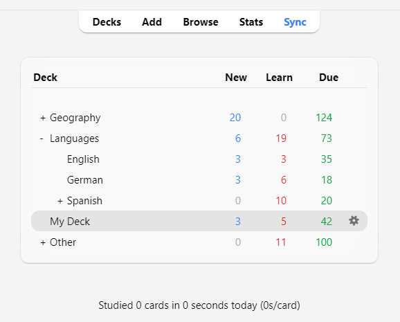

Навчання
- Колоди
- Огляд навчання
- Запитання
- Вивчення/повторне вивчення карток
- Пригадування карток
- Лічильники очікуваних карток
- Фактор розмиття
- Editing and More
- Порядок показу
- Сестринські картки та відкладання
- Keyboard Shortcuts
- Falling Behind
Щойно Ви знайшли колоду, яка Вам сподобалась, або ж зробили декілька нотаток, настає час розпочати навчання.
Колоди
Навчання у Anki відбувається в межах обраної колоди та її підколод.
Ваші колоди та підколоди будуть показуватися у вікні колод списком. Також, для поточного дня тут буде показано кількість карток Нові, Запам'ятати та Пригадати.

Колода стане 'поточною колодою', щойно Ви клацнете на ній, а Anki перемкнеться до вікна навчання. Повернутися до списку колод, щоб змінити поточну колоду на іншу, можна у будь-який час, клацнувши на "Колоди" у верхній частині головного вікна. (Щоб обрати нову колоду за допомогою клавіатури, можна скористатися меню "Вчити колоду". Розпочати вивчення поточної колоди можна, натиснувши s.)
Значок коліщатка, який знаходиться праворуч від колоди, дозволяє перейменувати, видалити змінити налаштування або експортувати її.
Огляд навчання
Клацнувши на колоді для навчання, Ви побачите екран з кількістю карток на сьогодні. Він називається 'Огляд навчання':

Картки діляться на три типи: Нові, Запам'ятати, Пригадати. Якщо у налаштуваннях колоди увімкнено опцію Відкласти сестринські картки, Ви можете побачити кількість відкладених карток, які позначені сірим кольором:

Щоб розпочати навчальну сесію, натисніть на кнопку Вчити зараз. Anki почне показувати Вам картки до тих пір, допоки картки, показ яких було заплановано на сьогодні, не закінчаться.
Під час навчання, Ви можете повернутися до вікна огляду, натиснувши на клавіатурі клавішу s.
Запитання
Коли картка з'являється, Ви бачите лише запитання. Після того, як Ви подумали про ймовірну відповідь, клацніть на Показати відповідь або ж натисніть клавішу пробілу. Тоді з'явиться відповідь. Абсолютно нормально, якщо Вам слід трішки подумати над відповіддю, однак, зазвичай, якщо відповідь не спала Вам на гадку протягом 10 секунд, краще відкрити її, аніж мучитися з тим, щоб її пригадати.
Коли відповідь з'явиться, Вам слід порівняти власну відповідь з показаною, і сказати Anki наскільки добре Ви її запам'ятали. Якщо Ви не довіряєте собі у визначенні правильності відповіді, то можете вказати Anki, щоб вона попросила Вас вдрукувати відповідь замість того щоб просто її показати.
Вивчення/повторне вивчення карток
Коли Ви вивчаєте нові картки, або повторно вивчаєте забуті, Anki показує картку один або декілька разів, щоб допомогти Вам її запам'ятати. Кожен показ називається 'кроком навчання'. Типово існує два кроки: 1 хвилина та 10 хвилин. Ви можете змінити кількість кроків та затримки між ними у налаштуваннях колоди.
Протягом навчання показується чотири кнопки для оцінювання:
-
Знову переміщує картку на перший крок.
-
Тяжко повторює поточний крок.
- Якщо картка знаходиться на першому кроці, затримка визначатиметься як середнє значення між Знову та Добре.
- Після першого кроку, Тяжко повторює попередню затримку.
-
Добре переносить картку на наступний крок. Якщо картка була на останньому кроці, тоді картка перетворюється у картку для пригадування (вона 'випускається'). Типово, щойно картка досягає кінця кроків навчання, її буде показано наступного дня знову, а потім проміжки між показами будуть зростати (дивіться наступний параграф).
-
Легко одразу ж перетворює картку у картку для повторювання, навіть якщо попереду були ще кроки для навчання. Типово, якщо Ви перебуваєте у режимі повторювання, картка з'явиться знову через 4 дні, а далі проміжки між показами будуть зростати. У планувальнику першої версії, кнопка "Легко" не буде показуватися у режимі повторювання оскільки вона буде використовувати той же інтервал, що й кнопка "Добре". У планувальнику версії 2 і вище коли картка перебуває у режимі повторювання, кнопка "Легко" буде збільшувати проміжок на один день.
Коли картки показуються вперше, вони знаходяться на першому кроці. Таким чином, якщо першою відповіддю на картку буде "Добре", наступного разу її буде показано через 10 хвилин, а початковий однохвилинний крок буде пропущено. Якщо ж Ви натиснете на кнопку "Знову", тоді картка з'явиться знову через одну хвилину.
Щоб вибрати потрібну кнопку, Ви можете натискати на клавіатурі клавіші 1, 2, 3 та 4, де 1 відповідає кнопці Знову. Натискання клавіш Пробіл або Enter рівносильне натисканню кнопки Добре.
Якщо для показу не залишилося більше карток, тоді Anki знову покаже картки для вивчення, навіть, якщо таймер затримки показу ще не скінчився. Якщо Ви бажаєте чекати на повну затримку для навчання, змініть цю поведінку у меню Інструменти > Налаштування > Повторювання > Планувальник > Обмежити навчання наперед.
Пригадування карток
Коли, вивчену раніше, картку слід пригадати, оцінити свою відповідь можна за допомогою чотирьох кнопок:
-
Знову позначає відповідь неправильною та просить Anki показувати картку у майбутньому частіше. Така картка позначається 'невдалою'. Ви знайдете більше інформації про те, як опрацьовуються невдалі пригадування у параграфі Невдачі.
-
Тяжко, типово, показує картку з трішки більшою затримкою ніж попереднього разу, і каже Anki показувати картку у майбутньому частше.
-
Добре вказує Anki, що останній інтервал вибрано вдало, і складність вивчення картки не слід змінювати ані в сторону легкості, ані складності. При типовій початковій складності, картка буде показуватися знову приблизно через вдвічі з половиною довший інтервал аніж попереднього разу. Отже, якщо попереднього разу картка з'явилась через 10 днів, то наступний показ відбудеться через 25 днів.
-
Легко каже Anki, що обраний інтервал був надто коротким. Наступний показ картки буде заплановано значно пізніше, порівняно з 'Добре', і Anki запланує значно рідші майбутні покази. Оскілки 'Легко' дуже сильно збільшує інтервали, найкраще її використовувати для найлегших карток. Зазвичай, Ви будете відповідати 'Добре'.
Так само, як і у випадку з навчальними картками, Ви можете використовувати клавіші 1, 2, 3 та 4 щоб обрати відповідь. Натискання клавіш Пробіл або Enter рівносильне натисканню кнопки Добре.
Щоб дізнатися більше про роботу алгоритму перегляньте Налаштування колоди та ЧаПи.
Лічильники очікуваних карток
Коли показано лише запитання, Αnki виводить внизу екрану три числа, напр. 6 + 9 +59. Вони відповідають новим (синій колір), запам'ятовувальним (помаранчевий колір) та пригадувальним (зелений колір) карткам. Якщо Ви не хочете бачити ці числа, їх можна вимкнути у налаштуваннях Anki.

У планувальнику першої версії, числа показують кількість пригадувань до завершення вивчення всіх карток у даній черзі, а не загальну кількість карток. Якщо ж у Вас, для невдалих карток було налаштовано декілька кроків навчання, тоді ці числа збільшуються більш аніж на одиницю коли Ви зазнаєте невдачі з карткою, адже картку треба буде показати знову декілька разів.
Починаючи з другої версії планувальника, числа показують картки, а тому лічильник завжди збільшується на одиницю, незалежно від того, скільки кроків навчання ще залишилося.
Разом з показаною відповіддю, Anki зазначає під кожною кнопкою приблизний час, коли картка з'явиться наступного разу. Якщо Ви не хочете бачити ці показники, їх можна відключити у налаштуваннях Anki.
Фактор розмиття
Якщо, пригадуючи картку, Ви натискаєте на кнопку Легко, Anki додаватиме трішки випадкового «розмиття» щоб запобігти ситуації, коли декілька одночасно доданих карток з однаковим рейтингом чіпляються одна за одну та завжди з'являються для пригадування у той самий день. Таке розмиття буде з'являтися на кнопках відповідей коли увімкнено планувальник версії 3. Тому якщо Ви використовуєте попередню версію і помічаєте невелику різницю між тим що Ви обираєте та фактичними інтервалами появи карток, то причиною може бути саме це.
Додаткова затримка додається і для запам'ятовувальних карток, щоб вони не завжди з'являлися в однаковому порядку, однак на кнопках відповіді про це не згадується. Цю функціональність неможливо вимкнути.
Editing and More
You can click the Edit button in the bottom left to edit the current note. When you finish editing, you’ll be returned to study. The editing screen works very similarly to the add notes screen.
At the bottom right of the review screen is a button labeled More. This button provides some other operations you can do on the current card or note:
-
Flag Card: Adds a colored marker to the card, or toggles it off. Flags will appear during study, and you can search for flagged cards in the Browse screen. This is useful when you want to take some action on the card at a later date, such as looking up a word when you get home. If you're using Anki 2.1.45+, you can also rename flags from the browser.
-
Bury Card / Note: Hides a card or all of the note’s cards from review until the next day. (If you want to unbury cards before then, you can click the “unbury” button on the deck overview screen.) This is useful if you cannot answer the card at the moment or you want to come back to it another time. Burying can also happen automatically for cards of the same note.
With the old scheduler, if cards were in learning when they are buried, they are moved back to the new card queue or review queue prior to being buried.
With the 2.1 scheduler, however, burying cards does not reset a card's learning steps.
-
Forget card: Move current card to the end of the new queue.
From Anki 2.1.50+, Anki will remember the original order of a new card when it is first studied with the V3 scheduler. The "Restore original position" option allows you to reset the card back to its original position when you forget it.
The "Reset repetition and lapse count" option, if enabled, will set the review and failure counters for the card back to zero. It does not remove the review history that is shown at the bottom of the card info screen.
-
Set Due Date: Put cards in the review queue, and make them due on a certain date.
-
Suspend Card / Note: Hides a card or all of the note’s cards from review until they are manually unsuspended (by clicking the suspend button in the browser). This is useful if you want to avoid reviewing the note for some time, but don’t want to delete it. With the old scheduler, if cards were in learning when they are suspended, they are moved back to the new card queue or review queue prior to being suspended.
With the 2.1 scheduler, however, suspending cards does not reset a card's learning steps.
-
Options: Edit the options for the current deck.
-
Card Info: Displays statistical information about the card.
-
Previous Card Info: Displays statistical information about the previous card.
-
Mark Note: Adds a “marked” tag to the current note, so it can be easily found in the browser. This is similar to flagging individual cards, but works with a tag instead, so if the note has multiple cards, all cards will appear in a search for the marked tag. Most users will want to use flags instead.
-
Create Copy: Opens a duplicate of the current note in the editor, which can be slightly modified to easily obtain variations of your cards. By default, the duplicate card will be created in the same deck as the original.
-
Delete Note: Deletes the note and all of its cards.
-
Replay Audio: If the card has audio on the front or back, play it again.
-
Pause Audio: Pauses the audio if it is playing.
-
Audio -5s / +5s: Jump backwards / forward 5 seconds in the currently playing audio.
-
Record Own Voice: Record from your microphone for the purposes of checking your pronunciation. This recording is temporary and will go away when you move to the next card. If you want to add audio to a card permanently, you can do that in the edit window.
-
Replay Own Voice: Replay the previous recording of your voice (presumably after showing the answer).
Порядок показу
Studying will show cards from the selected deck and any decks it contains. Thus, if you select your “French” deck, the subdecks “French::Vocab” and “French::My Textbook::Lesson 1” will be shown as well.
The way Anki fetches cards from the decks depends on the algorithm used:
-
With the v1 scheduler, when a deck has subdecks, the cards will appear from each deck in turn.
-
With the v2 scheduler, when a deck has subdecks, reviews are taken from all children decks at once. The review limit of the child decks is ignored - only the limit of the deck you clicked on applies.
-
With the v3 scheduler each child deck's limit is also enforced, and you do not need to see the cards in deck order either. See the deck options section of the manual for more information.
By default, for new cards, Anki fetches cards from the decks in alphabetical order. So in the above example, you would get cards first from “French”, then “My Textbook”, and finally “Vocab”. You can use this to control the order cards appear in, placing high priority cards in decks that appear higher in the list. When computers sort text alphabetically, the “-” character comes before alphabetical characters, and “~” comes after them. So you could call the deck “-Vocab” to make them appear first, and you could call the other deck “~My Textbook” to force it to appear after everything else.
New cards and reviews are fetched separately, and Anki won’t wait until both queues are empty before moving on to the next deck, so it’s possible you’ll be exposed to new cards from one deck while seeing reviews from another deck, or vice versa. If you don’t want this, click directly on the deck you want to study instead of one of the parent decks.
Since cards in learning are somewhat time-critical, they are fetched from all decks at once and shown in the order they are due.
To control the order reviews from a given deck appear in, or change new cards from ordered to random order, please see the deck options. For more fine-grained ordering of new cards, you can change the order in the browser.
Сестринські картки та відкладання
Recall from the basics that Anki can create more than one card for each thing you input, such as a front→back card and a back→front card, or two different cloze deletions from the same text. These related cards are called 'siblings'.
When you answer a card that has siblings, Anki can prevent the card’s siblings from being shown in the same session by automatically 'burying' them. Buried cards are hidden from review until the clock rolls over to a new day or you manually unbury them using the “Unbury” button that’s visible at the bottom of the deck overview screen. Anki will bury siblings even if the siblings are not in the same deck (for instance, if you use the deck override feature).
You can enable burying from the deck options screen - there are separate settings for new cards and reviews.
Anki will only bury siblings that are new or review cards. It will not hide cards in learning, as time is of the essence for those cards. On the other hand, when you study a learning card, any new/review siblings will be buried.
Note: A card cannot be buried and suspended at the same time. Suspending a buried card will unbury it. Burying a suspended card does not work on Anki 2.1.49+, whereas on earlier versions, it will unsuspend the card.
Keyboard Shortcuts
Most of the common operations in Anki have keyboard shortcuts. Most of them are discoverable in the interface: menu items list their shortcuts next to them, and hovering the mouse cursor over a button will generally show its shortcut in a tooltip.
When studying, either Space or Enter will show the answer. When the answer is shown, you can use Space or Enter to select the Good button. You can use the 1-4 keys to select a specific ease button. Many people find it convenient to answer most cards with Space and keep one finger on 1 for when they forget.
The "Study Deck" item in the Tools menu allows you to quickly switch to a deck with the keyboard. You can trigger it with the '/' key. When opened, it will display all of your decks and show a filter area at the top. As you type characters, Anki will display only decks matching the characters you type. You can add a space to separate multiple search terms, and Anki will show only decks that match all the terms. So “ja 1” or “on1 ja” would both match a deck called “Japanese::Lesson1”.
Falling Behind
If you fall behind in your reviews, Anki will prioritize cards that have been waiting the longest. It does this by taking the cards that have been waiting the longest and showing them to you in a random order up until your daily review limit. This ordering ensures that no cards will be left waiting indefinitely, but it means that if you introduce new cards, their reviews won’t appear until you’ve gotten through your backlog.
If you wish to change the order of the overdue reviews, you can do so by creating a filtered deck.
When you answer cards that have been waiting for a while, Anki factors in that delay when determining the next time a card should be shown. Please see the section on Anki’s spaced-repetition algorithm for more information.